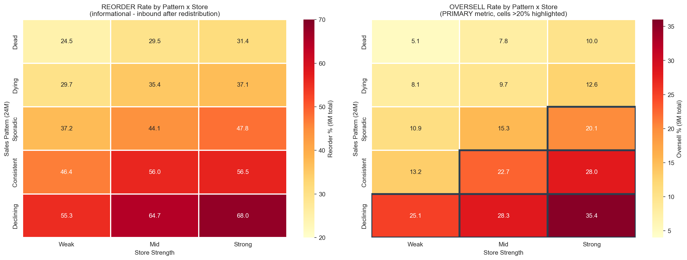
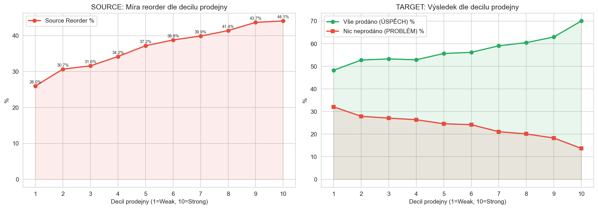
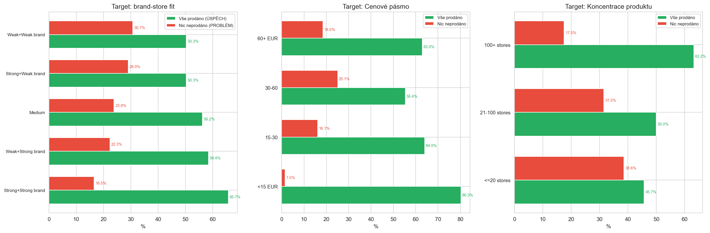

Consolidated Findings: SalesBased MinLayers - Calc 233
CalculationId=233 | EntityListId=3 | Calculation date: 2025-07-13 | Monitoring: to 2026-03-22 | Generated: 2026-03-22 10:29
1. Overview
42,404
Redistribution pairs
48,754
Total redistributed pcs
Source: Overall metrics (SKU + quantity) - 4M and total
| Metric | 4 months | Total (~9M) |
|---|
| SKU (%) | Qty (pcs) | SKU (%) | Qty (pcs) |
|---|
| Total redistributed | 36,770 | 48,754 | 36,770 | 48,754 |
| Reorder (any inbound) | 7,087 (19.3%) | 7,980 (16.4%) | 13,841 (37.6%) | 16,615 (34.1%) |
| Oversell (sales-based) | 1,317 (3.6%) | 1,464 (3.0%) | 4,718 (12.8%) | 5,578 (11.4%) |
Target: Overall metrics (SKU + quantity) - 4M and total
Sell-through formula: LEAST(QuantitySold, SupplyBefore + QtyRedistributed) / (SupplyBefore + QtyRedistributed) -- capped at 100%
| Metric | 4 months | Total (~9M) |
|---|
| SKU (%) | Qty (pcs) | SKU (%) | Qty (pcs) |
|---|
| Total supply (pre + redist) | 81,196 | 81,196 |
| Capped sold | - | 37,577 | - | 56,928 |
| Sell-through | 46.3% | 70.1% |
| All sold (SUCCESS) | 13,631 (32.7%) | - | 24,862 (59.7%) | - |
| Nothing sold (PROBLEM) | 17,552 (42.2%) | - | 8,872 (21.3%) | - |
| Remaining stock | - | 43,619 | - | 24,268 |
All metrics by MinLayer
Oversell targets: 4M: 5-10% | total: <20%. Goal is NOT zero reorder.
| ML | SKU | Reorder (inbound) | Oversell (sales) | Redist qty | Status |
|---|
| 4M % (qty) | Total % (qty) | 4M % (qty) | Total % (qty) |
|---|
| 0 | 1,709 | 3.3% (66) | 6.3% (121) | 1.1% (20) | 2.3% (43) | 2,061 | OK |
| 1 | 31,965 | 19.6% (6,883) | 38.0% (13,978) | 3.6% (1,241) | 12.5% (4,564) | 40,598 | OK |
| 2 | 2,680 | 25.6% (890) | 52.3% (2,052) | 5.1% (180) | 22.2% (812) | 4,716 | EXCEEDS |
| 3 | 416 | 16.6% (141) | 46.9% (464) | 3.4% (23) | 18.0% (159) | 1,379 | OK (tight) |
| ALL | 36,770 | 19.3% (7,980) | 37.6% (16,615) | 3.6% (1,464) | 12.8% (5,578) | 48,754 | - |
Key takeaway: Oversell (sales-based) is much lower than reorder (inbound-based): 12.8% vs 37.6% SKU, 11.4% vs 34.1% qty.
Reorder includes purchases unrelated to redistribution. Oversell is the true impact metric.
At 4M: oversell is only 3.6% (target 5-10%) - already well within target.
At total: 12.8% (target <20%) - also within target overall. Only ML2 (22.2%) exceeds.
2. Source: Sales Patterns (24M) - primary predictor
Analysis of 24-month sales history revealed 5 patterns that strongly predict oversell risk after redistribution.
Both reorder and oversell are shown side by side in every table - they are different metrics and must not be mixed.
2.1 All 15 segments: Pattern x Store (BOTH reorder + oversell)

| Pattern | Store | SKU |
Reorder % | Reorder qty |
Oversell % | Oversell qty |
Redist qty | Recommendation |
|---|
| Dead | Weak | 4,597 | 24.5% | 1,225 | 5.1% | 251 | 5,461 | CAN LOWER ML |
| Dead | Mid | 6,967 | 29.5% | 2,320 | 7.8% | 607 | 8,633 | CAN LOWER ML |
| Dead | Strong | 4,061 | 31.4% | 1,481 | 10.0% | 486 | 5,143 | OK |
| Dying | Weak | 1,594 | 29.7% | 516 | 8.1% | 135 | 1,933 | CAN LOWER ML |
| Dying | Mid | 2,882 | 35.4% | 1,110 | 9.7% | 302 | 3,505 | CAN LOWER ML |
| Dying | Strong | 1,951 | 37.1% | 795 | 12.6% | 260 | 2,373 | OK |
| Sporadic | Weak | 2,003 | 37.2% | 871 | 10.9% | 252 | 2,606 | OK |
| Sporadic | Mid | 4,176 | 44.1% | 2,255 | 15.3% | 777 | 5,783 | OK |
| Sporadic | Strong | 3,712 | 47.8% | 2,349 | 20.1% | 929 | 5,705 | MUST RAISE ML |
| Consistent | Weak | 431 | 46.4% | 246 | 13.2% | 63 | 641 | OK |
| Consistent | Mid | 1,164 | 56.0% | 858 | 22.7% | 316 | 1,877 | MUST RAISE ML |
| Consistent | Strong | 1,693 | 56.5% | 1,342 | 28.0% | 608 | 2,898 | MUST RAISE ML |
| Declining | Weak | 219 | 55.3% | 150 | 25.1% | 74 | 294 | MUST RAISE ML |
| Declining | Mid | 569 | 64.7% | 446 | 28.3% | 190 | 781 | MUST RAISE ML |
| Declining | Strong | 751 | 68.0% | 651 | 35.4% | 328 | 1,121 | MUST RAISE ML |
| TOTAL | 36,770 |
- | 16,615 |
- | 5,578 |
48,754 | - |
MUST RAISE ML (oversell >20%): Sporadic+Strong (20.1%), Consistent+Mid (22.7%), Consistent+Strong (28.0%),
Declining+Weak (25.1%), Declining+Mid (28.3%), Declining+Strong (35.4%). These 6 segments need higher source MinLayer.
CAN LOWER ML (oversell <10%): Dead+Weak (5.1%), Dead+Mid (7.8%), Dying+Weak (8.1%), Dying+Mid (9.7%).
These 4 segments are safe enough to be MORE aggressive (lower ML = take more stock). This means ML can go to 0
for delisted items, while A-O/Z-O business rule enforces minimum 1.
Key insight: Reorder is always higher than oversell (e.g., Dead+Weak: 24.5% reorder vs 5.1% oversell).
Reorder includes ALL inbound (purchases, transfers) which may be unrelated to redistribution.
Oversell is the TRUE metric - only counts sales that exceeded remaining stock.
3. Source: Store Strength

Store strength (measured by sales decile) has linear impact on both sides of redistribution:
| Metric | Decile 1 (Weak) | Decile 10 (Strong) | Trend |
|---|
| Source Reorder % | 26% | 44% | Linear growth: stronger stores = more reorders |
| Source Oversell % | ~8% | ~25% | Strong stores sell more = higher oversell risk |
| Target All-Sold (SUCCESS) | 48% | 70% | Stronger stores sell all redistributed goods |
| Target Nothing-Sold (PROBLEM) | 32% | 14% | Weaker stores = more "stuck" goods |
Implication for ML: Strong source stores need HIGHER ML (they will sell even after redistribution).
Strong target stores need HIGHER ML too (they sell everything = need more stock to keep 1 remaining).
Weak source stores can have LOWER ML (safe to take more). Weak target stores need LOWER ML (goods don't sell there).
4. Source: Monthly Sales Cadence
| Months with sales (24M) | SKU | Reorder % | Oversell % | Avg MinLayer | Note |
|---|
| 0M | 15,384 | 28.5% | 8.3% | 0.94 | No sales = low oversell, safe |
| 1M | 8,022 | 35.5% | ~12% | 1.00 | Single month of sales |
| 3M | 2,635 | 47.8% | ~18% | 1.10 | Sporadic sales |
| 6M | 805 | 57.3% | ~22% | 1.20 | Regular sales |
| 10M | 258 | 67.1% | ~28% | 1.50 | Frequent sales |
| 16M | 58 | 81.0% | ~35% | 1.86 | Near-constant sales |
MinLayer grows TOO SLOWLY: Product with 16 months of sales (out of 24M) has average ML only 1.86, but 81% reorder!
Current heuristic does not adequately respond to sales frequency. Monthly cadence is captured in the Pattern classification.
5. Target Analysis: Sell-through Rate (primary target metric)
Sell-through = SalesTotal_Post / (TargetSupplyAtCalc + TotalQtyReceived).
This is the PRIMARY target metric - how much of total available stock was actually sold.
5.1 Sell-through Distribution
| Bucket | SKU | Received qty | Sold qty | Remaining qty | Avg ML3 |
|---|
| Nothing sold (0%) | 8,872 | 9,822 | 0 | 15,898 | 1.82 |
| Low (<30%) | 35 | 101 | 39 | 128 | 2.17 |
| Medium (30-80%) | 7,843 | 9,098 | 8,374 | 8,218 | 2.09 |
| High (80-99%) | 19 | 120 | 167 | 24 | 3.00 |
| All sold (100%+) | 24,862 | 29,613 | 90,689 | 0 | 2.04 |
All sold (100%+) = SUCCESS: 24,862 SKU (59.7%) sold EVERYTHING. This is NOT a problem - it's a signal to
send MORE next time (increase target ML so that 1 piece remains after sales).
Nothing sold (0%) = PROBLEM: 8,872 SKU (21.3%) sold NOTHING. Wasted redistribution.
Target ML should be LOWERED for these segments.
5.2 By Store Strength x Sales Bucket

| Store | Sales | SKU | ST 4M | ST Total |
Nothing % | All-sold % | Received | Sold | Direction |
|---|
| Weak | Zero | 380 | 0.49 | 0.76 | 43.7% | 53.7% | 407 | 306 | ML DOWN |
| Weak | Low(1-2) | 3,560 | 0.37 | 0.77 | 34.6% | 44.4% | 3,907 | 4,806 | ML DOWN |
| Weak | Med+(3+) | 1,829 | 0.72 | 1.42 | 12.6% | 67.2% | 2,553 | 5,967 | ML UP |
| Mid | Zero | 982 | 0.50 | 0.85 | 39.3% | 57.2% | 1,057 | 880 | ML DOWN |
| Mid | Low(1-2) | 9,787 | 0.42 | 0.88 | 28.8% | 48.6% | 10,712 | 15,053 | OK |
| Mid | Med+(3+) | 5,985 | 0.76 | 1.57 | 12.5% | 69.3% | 8,116 | 20,953 | ML UP |
| Strong | Zero | 790 | 0.72 | 1.18 | 31.8% | 66.5% | 820 | 950 | ML DOWN |
| Strong | Low(1-2) | 10,419 | 0.51 | 1.09 | 22.3% | 57.1% | 11,415 | 20,075 | OK |
| Strong | Med+(3+) | 7,899 | 0.89 | 1.83 | 9.0% | 74.7% | 9,767 | 30,279 | ML UP |
Strong + Med+ stores: sell-through 1.83 (total), 74.7% all-sold, only 9.0% nothing-sold. These are BEST targets. ML should be INCREASED.
Weak + Zero stores: sell-through 0.76, 43.7% nothing-sold. These are WORST targets. ML should be DECREASED.
5.3 By Brand-Store Fit
| Fit | SKU | ST 4M | ST Total |
Nothing % | All-sold % | Received | Sold | Remaining |
|---|
| Strong+Strong brand | 17,756 | 0.69 | 1.43 | 16.5% | 65.7% | 20,410 | 48,618 | 8,647 |
| Weak+Strong brand | 1,170 | 0.59 | 1.19 | 22.3% | 58.4% | 1,384 | 2,899 | 722 |
| Medium | 18,655 | 0.54 | 1.12 | 23.8% | 56.2% | 22,109 | 40,766 | 11,901 |
| Strong+Weak brand | 400 | 0.53 | 1.10 | 29.0% | 50.3% | 522 | 812 | 296 |
| Weak+Weak brand | 3,650 | 0.45 | 0.90 | 30.7% | 50.3% | 4,329 | 6,174 | 2,702 |
Strong+Strong brand: ST=1.43, 65.7% all-sold, only 16.5% nothing. BEST combination, ML can be higher.
Weak+Weak brand: ST=0.90, 50.3% all-sold, 30.7% nothing. WORST combination, ML should be lower.
Difference: 15.4pp in all-sold, 14.2pp in nothing-sold!
5.4 By Price Band
| Price | SKU | ST 4M | ST Total | Nothing % | All-sold % |
|---|
| <15 EUR | 66 | 1.10 | 2.10 | 1.5% | 80.3% |
| 15-30 | 1,202 | 0.75 | 1.44 | 16.1% | 64.0% |
| 30-60 | 18,247 | 0.54 | 1.10 | 25.1% | 55.4% |
| 60+ EUR | 22,116 | 0.64 | 1.32 | 18.5% | 63.0% |
5.5 By Product Concentration
| Concentration | SKU | ST 4M | ST Total | Nothing % | All-sold % |
|---|
| <=20 stores | 1,144 | 0.46 | 0.89 | 38.6% | 45.7% |
| 21-100 stores | 9,476 | 0.49 | 0.98 | 31.5% | 50.0% |
| 100+ stores | 31,004 | 0.64 | 1.32 | 17.5% | 63.2% |

Product concentration matters: Products on 100+ stores have 63.2% all-sold and only 17.5% nothing.
Products on <=20 stores: 45.7% all-sold, 38.6% nothing. Widely distributed products are safer targets.
6. Pair Analysis (Source + Target combined)
| Pair outcome | Description | Count | Share |
|---|
| BEST | Source OK (no reorder) + Target all sold | 14,896 | 35.1% |
| IDEAL | Source OK + Target partially sold | 4,923 | 11.6% |
| SRC FAIL | Source reordered, but Target sold | 13,530 | 31.9% |
| WASTED | Source OK, but Target sold nothing | 6,274 | 14.8% |
| DOUBLE FAIL | Source reordered + Target sold nothing | 2,781 | 6.6% |
Target success rate: 78.6% - most redistributed goods sell (at least partially) on the target store.
Flow direction and double-fail rate
| Flow direction | Double Fail % | Rating |
|---|
| Weak -> Strong | 2.8% | Best direction |
| Mid -> Strong | 3.9% | Good direction |
| Strong -> Strong | 5.1% | Acceptable |
| Mid -> Mid | 5.8% | Average |
| Strong -> Weak | 10.6% | Worst direction |
7. Promo, Price, and Christmas Effects
Promo share and oversell
Declining sales pattern is NOT caused by promotions - promo share (~30%) is the same as other patterns.
| Promo share | Oversell % | Note |
|---|
| 0% (no promo) | 14.2% | Baseline |
| 1-20% promo | 34.4% | HIGHEST oversell |
| 20-50% promo | 29.1% | Above average |
| >50% promo | 27.8% | High but lower than 1-20% |
Christmas seasonality
| Xmas sales share | Oversell % | Description |
|---|
| 0-5% (non-seasonal) | 16.0% | Standard products |
| 5-20% (mildly seasonal) | 20.1% | Mild Xmas effect |
| 20-60% (seasonal) | 25-27% | Significant Xmas boost |
| >60% (pure Xmas) | 18.8% | Sells mainly at Xmas |
Riskiest segment: 20-60% Xmas share - year-round sellers that get a Xmas boost.
After redistribution (outside Xmas), they sell slower than expected.
Pure Xmas products (>60%) paradoxically have lower oversell (18.8%) because they simply don't sell outside season.
8. Other Factors
Redistribution loop
3,117 SKU (8.5%) were re-redistributed (Y-STORE TRANSFER). 72% of them are zero-sellers with ML1.
This indicates some products are cyclically moved without being sold.
SkuClass delisting
Delisted source SKU have 29pp lower reorder (13.2% vs 42.7%).
For delisted products, redistribution is safe - MinLayer can be 0.
Brand-Store fit (source perspective)
| Combination | Reorder % | Oversell % | Difference from avg |
|---|
| Strong brand + Strong store | 45.3% | ~25% | +16pp reorder |
| Weak brand + Weak store | 29.3% | ~10% | -8pp reorder |
9. Summary of ALL Factors with Direction Arrows
This table shows all analyzed factors and their impact on BOTH source and target MinLayer.
| Factor | Impact (metric) |
Source ML direction | Target ML direction |
Size | Priority |
|---|
| Sales Pattern: Declining | Oversell 35.4% (Strong) |
SOURCE UP (raise ML) | - |
+27pp vs Dead | 1 - Primary |
| Sales Pattern: Dead/Dying + Weak | Oversell 5-8% |
SOURCE DOWN (lower ML) | - |
Safe, under target | 1 - Primary |
| Store Strength (source) | Strong 44% vs Weak 26% reorder |
SOURCE UP for strong | - |
+18pp | 1 - Primary |
| Store Strength (target) | Strong 74.7% all-sold |
- | TARGET UP for strong |
Send more to strong stores | 1 - Primary |
| Target sell-through: Weak+Zero | 43.7% nothing-sold |
- | TARGET DOWN |
Send less to weak stores | 1 - Primary |
| Brand-Store Fit: Strong+Strong | 65.7% all-sold target |
SOURCE UP (+1 modifier) | TARGET UP (+1) |
+16pp reorder, +15pp all-sold | 2 - Secondary |
| Product Concentration (100+) | 42.9% source reorder, 63.2% tgt all-sold |
SOURCE UP (+1) | TARGET UP (+1) |
+25.9pp reorder | 2 - Secondary |
| Product Concentration (<=20) | 17% reorder, 38.6% nothing-sold |
SOURCE DOWN (safe) | TARGET DOWN |
Niche product, fewer stores | 2 - Secondary |
| SkuClass Delisting | 13.2% vs 42.7% reorder |
SOURCE = 0 (override) | - |
-29.5pp | 1 - Override |
| Xmas Seasonality (20-60%) | 25-27% oversell |
SOURCE UP (+1) | - |
+9-11pp | 3 - Modifier |
| Redist. Loop | 8.5% SKU re-redistributed |
Monitoring signal |
Indicator | 3 - Monitoring |
4 directions for ML adjustment:
- SOURCE UP: Declining pattern, strong store, high concentration, brand-fit strong+strong, Xmas seasonal
- SOURCE DOWN: Dead/Dying on weak/mid store, delisted, low concentration = safe to take more
- TARGET UP: Strong store + Med+ sales (high sell-through, high all-sold) = send more
- TARGET DOWN: Weak store + Zero/Low sales (high nothing-sold, low sell-through) = send less
See
Report 2: Decision Tree for concrete rules.
Generated: 2026-03-22 10:29 | CalculationId=233 | EntityListId=3